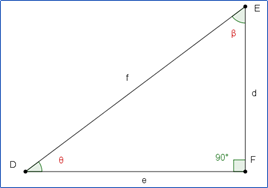

Identidades Trigonométricas Fundamentales
Bienvenidos empecemos la lección; recuerda lo que aprendimos en la lección 1, que es necesario para estos nuevos aprendizajes.
Aprendizaje: Comprende la deducción de algunas identidades trigonométricas.
Identidades Trigonométricas.
Empecemos por conocer con qué Identidades Trigonométricas trabajaremos en esta lección
Identidades Trigonométricas Pitagóricas:
\[Sen^2{{\alpha}}+Cos^2{{\alpha}}= 1\]
\[1 +tan^2{{\alpha}}=sec^2{{\alpha}}\]
\[1 +cot^2 {{\alpha}}=csc^2{{\alpha}}\]
Identidades Trigonométricas Inversas:
\[sen\,{\alpha}= \frac{1}{csc\alpha} \]
\[cos\,{\alpha}= \frac{1}{sec\alpha} \]
\[tan\,{\alpha}= \frac{1}{cot\alpha} \]
\[csc\,{\alpha}= \frac{1}{sen\alpha} \]
\[sec\,{\alpha}= \frac{1}{cos\alpha} \]
\[cot\,{\alpha}= \frac{1}{tan\alpha} \]
Identidades Trigonométricas Por cociente:
\[tan\,{\alpha}= \frac{{{{sen{ {\alpha}} }}}}{{{{cos{\alpha}}}}}\]
\[cot\,{\alpha}= \frac{{{{cos{ {\alpha}} }}}}{{{{sen{\alpha}}}}}\]
Identidades Trigonométricas Introducción.
Ahora vamos a demostrar algunas de ellas.
Figura 15, imagen propia.
\[sen\,{\theta}=\frac{{{{d}}}}{{{{f}}}}\]
\[cos\,{\theta}=\frac{{{{e}}}}{{{{f}}}}\]
Ahora sustituye en:
\[\frac{{{{sen\theta}}}}{{{{cos{\theta}}}}} =\frac{{{{\frac{{{{d}}}}{{{{f}}}}}}}}{{{{\frac{{{{e}}}}{{{{f}}}}}}}}\]
Ahora realiza la división de fracciones indicada, simplifica el resultado y escribe a continuación el resultado
\[\frac{{{{sen\theta}}}}{{{{cos{\theta}}}}} =\frac{{{{{{{{(f)(d)}}}}}}}}{{{{{{{{(f)(e)}}}}}}}}\]
f entre f = 1
\[ \frac{{{{f}}}}{{{{f}}}}=1\]
Por lo tanto:
\[\frac{{{{sen\theta}}}}{{{{cos{\theta}}}}} =\frac{{{{{{{{d}}}}}}}}{{{{{{{{e}}}}}}}}\]
Como puedes observar en el triángulo de la Figura 15,“d” es cateto opuesto al ángulo $theta$.
y “e” es cateto adyacente al ángulo $theta$
Recordando entonces tenemos:
\[\frac{{{{sen\theta}}}}{{{{cos{\theta}}}}} =\frac{{{{{{{{d}}}}}}}}{{{{{{{{e}}}}}}}}= tan{\theta}\]
que es una de las Identidades Trigonométricas por cociente que te mostramos al comienzo de esta lección.
Considerando el siguiente triángulo rectángulo

Figura 16, imagen propia.
Escribe las definiciones de las siguientes razones trigonométricas:
\[tan{\theta}=\frac{{{{d}}}}{{{{{e}}}}}\]
\[cot{\theta}=\frac{{{{e}}}}{{{{{d}}}}}\]
\[csc{\theta}=\frac{{{{f}}}}{{{{{d}}}}}\]
\[sec{\theta}=\frac{{{{f}}}}{{{{{e}}}}}\]
Sustituye en la siguiente expresión:
\[(tan{\theta})(cot{\theta})=(\frac{{{{d}}}}{{{{{e}}}}})(\frac{{{{e}}}}{{{{{d}}}}})= 1\]
Despejamos tangente \[tan{\theta}=\frac{{{{1}}}}{{{{cot{\theta}}}}}\] que es una de las Identidades Trigonométricas inversas.
Realicemos otra demostración ahora con:
\[(sec{\theta})(cos{\theta})=(\frac{{{{f}}}}{{{{{e}}}}})(\frac{{{{e}}}}{{{{{f}}}}})= 1\]
Despejamos coseno
\[cos{\theta}=\frac{{{{1}}}}{{{{sec{\theta}}}}}\]
Para obtener las Identidades Trigonométricas pitagóricas:

Figura 17, imagen propia.
Trabajamos con el seno $\theta$
\[sen{\theta}= \frac{{{{d}}}}{{{{f}}}}\]
\[(sen{\theta})^2=( {\frac{{{{d}}}}{{{{f}}}}})^2\]
\[(sen{\theta})^2={\frac{{{{d^2}}}}{{{{f^2}}}}}\]
Trabajamos con coseno $\theta$
\[cos{\theta}= \frac{{{{e}}}}{{{{f}}}}\]
\[(cos{\theta})^2=( {\frac{{{{e}}}}{{{{f}}}}})^2\]
\[(cos{\theta})^2={\frac{{{{e^2}}}}{{{{f^2}}}}}\]
Ahora
\[sen({\theta})^2+ cos({\theta})^2={\frac{{{{d^2}}}}{{{{f^2}}}}}+{\frac{{{{e^2}}}}{{{{f^2}}}}}={\frac{{{{d^2+e^2}}}}{{{{f^2}}}}}\]
\[sen({\theta})^2+ cos({\theta})^2={\frac{{{{d^2}}}}{{{{f^2}}}}}+{\frac{{{{e^2}}}}{{{{f^2}}}}}={\frac{{{{d^2+e^2}}}}{{{{f^2}}}}}\]
Recordando el Teorema de Pitágoras:
sabemos que la suma de los cuadrados de los catetos es igual al cuadrado de la hipotenusa ya que los catetos son d y e y la hipotenusa f.
Por lo tanto \[sen({\theta})^2+ cos({\theta})^2={\frac{{{{d^2}}}}{{{{f^2}}}}}+{\frac{{{{e^2}}}}{{{{f^2}}}}}={\frac{{{{d^2+e^2}}}}{{{{f^2}}}}}={\frac{{{{f^2}}}}{{{{f^2}}}}}= 1 \] es una identidad pitagórica.
Ahora demostremos otra Identidad
\[tan{\theta}= \frac{{{{d}}}}{{{{e}}}}\]
\[tan{\theta}^2= \frac{{{{d^2}}}}{{{{e^2}}}}\]
\[sec{\theta}= \frac{{{{f}}}}{{{{e}}}}\]
\[sec{\theta}^2= \frac{{{{f^2}}}}{{{{e^2}}}}\]
\[1+tan{\theta}^2=sec{\theta}^2 \]
\[1+\frac{{{{d^2}}}}{{{{e^2}}}}=\frac{{{{f^2}}}}{{{{e^2}}}}\]
despejando $f^2$
\[1=-\frac{{{{d^2}}}}{{{{e^2}}}}+\frac{{{{f^2}}}}{{{{e^2}}}}\]
\[1=-\frac{{{{-d^2+f^2}}}}{{{{e^2}}}}\]
$d^2 + e^2 = f^2$
Nuevamente el teorema de Pitágoras
Ahora despejando $e^2$
$e^2 = - d^2 + f^2 $
Por lo tanto tenemos:
\[1=\frac{{{{e^2}}}}{{{{e^2}}}}\]
Queda demostrado:
\[tan{\theta}^2= \frac{{{{d^2}}}}{{{{e^2}}}}\]